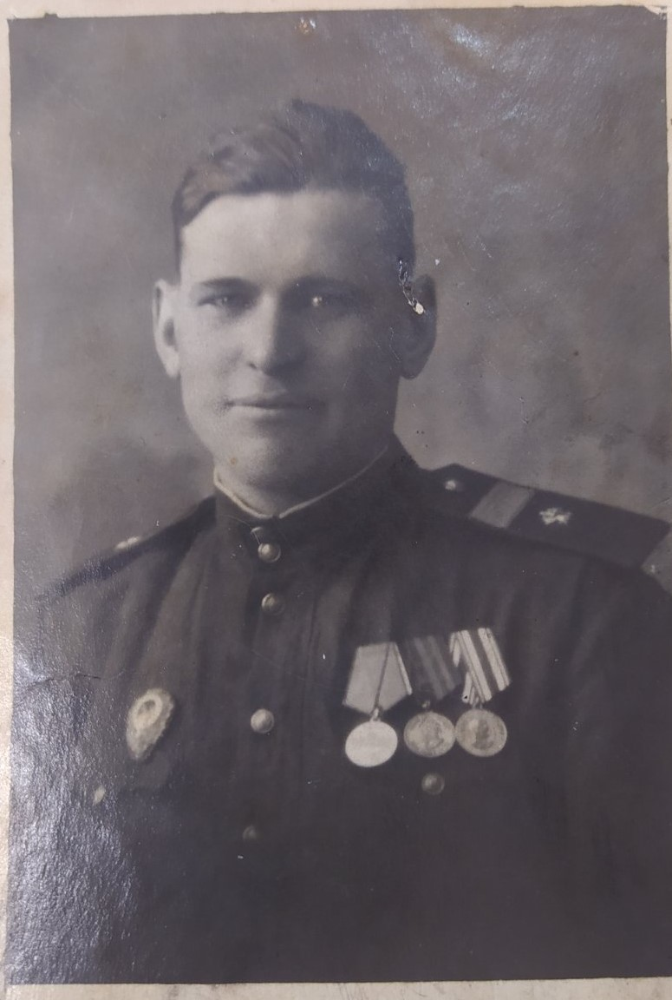
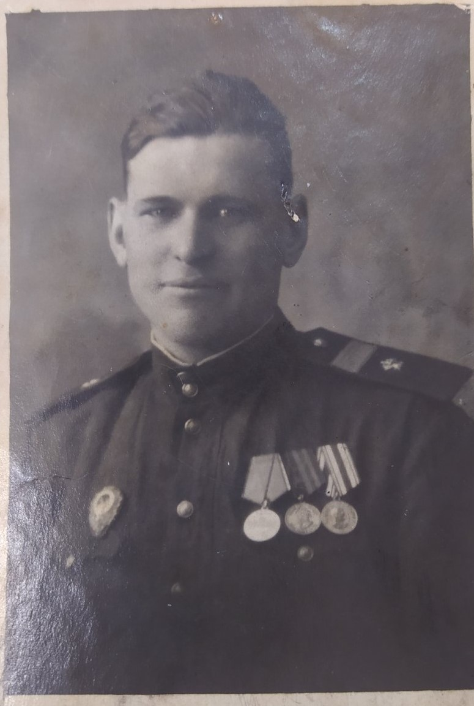

Артемьев Аким Петрович (1918 - 1984). Он был сапером во время войны. Воевал на Финской войне, Великой Отечественной войне и на Японской войне на Дальнем Востоке.
В 1938 году воевал на Финской войне, был награжден медалями.
В Великую Отечественную войну награжден медалями за отвагу, за взятие Берлина и Польши.
В 1945 – 1946 годах воевал на Японской войне, награжден медалями.
За Великую Отечественную войну его наградили 25 медалями.